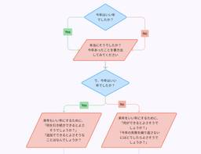
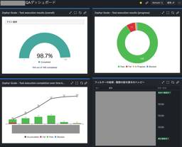
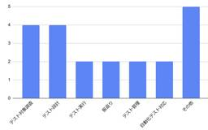
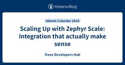
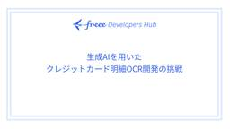
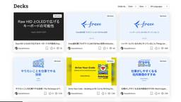
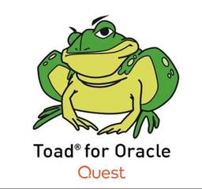
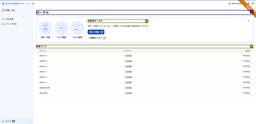
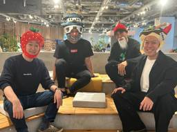

freee Developers Hub
https://developers.freee.co.jp/
フリー株式会社の開発者（エンジニア, デザイナー,プロダクトマネージャー, etc...）によるブログです
フィード

この素晴らしい「振り返り」に「問いかけ」を
freee Developers Hub
この記事は freee Developers Advent Calendar 2024 の19日目です。 adventar.org 初めまして！ freee でエンジニアリングマネージャー（以下 EM ）をしている Sassy です！ みなさん、振り返りはしていますか？ 先週の自分と比べて、今週の自分はどうなっていますか？ 自分は元々働く上で 仕事を楽しんで欲しい、楽しみたい そのために成長実感を個人でもチームでも感じられるようにしたい と考えています。 で、じゃあ成長実感ってどういうときに感じられるの？成長するためにはどうしたらいいの？というときに、振り返りが役に立っていると感じています。 …
5時間前

テスト管理ツールを移行してみた 〜ツール転生させてQA無双〜
freee Developers Hub
こんにちは。freee人事労務でQAエンジニアをしているnunです。 freee QA Advent Calendar 2024 19日目です。 昨年freee QA Advent Calender 2023にて下記テスト管理ツールの移行について投稿しました。 developers.freee.co.jp 本日はその後どうだったの？というところを投稿したいと思います。少し長いので必要に応じて後述の目次もご活用ください。 さて、タイトルでネタバレはしてしまっているのですが… お陰様でTestRailからZephyr Scaleへのテスト管理ツール移行は無事完了しました！！！ 結果として1年間がか…
14時間前

社内QAメンバーにとったアンケートをまとめたよ 1
1
freee Developers Hub
こんにちは。freee人事労務でQAエンジニアをしているしほです。 freee QA Advent Calendar 2024 18日目です。 なぜこのアンケートを実施しようと思ったのか QAの仕事は多岐にわたり、普段自身が業務をしている時に今すごく楽しいなと思うことが沢山あるのですが、他のQAの方をみていたり話していると人によって楽しいなと思う所が違ったりするのでは？と思い始めました。 QA業務の魅力についても人によって考え方が違いますし、アンケートをとってみました。 17名から回答を頂いたのでそれを発表したいと思います！ アンケートの概要 アンケート対象者フリーでQAエンジニアとして働くメ…
2日前

freeeのプロダクト価値を最大化させるPdL（プロダクトリード）ってなんだ！ 4
freee Developers Hub
こんにちは。 この記事は freee Developers Advent Calendar 2024 - Adventar 18日目の記事です。 adventar.org 担当するのは債権と請求書ドメインでPdL（プロダクトリード）をしているJumpです。以後お見知り置きを！ 今日はfreeeのロールモデルのひとつであるPdLとはなにか、何をしているのかの一例を紹介しようと思います。 そもそもPdL（プロダクトリード）って何？ 理想のユーザー価値を実現するリード人材でfreee の名称では PdL、プロダクトリードと呼んでいます。 ここ数年で生まれた出来立てほやほやのロールモデルです。 PdM…
2日前
脅威モデリングのためのカードゲームを比較する 2
freee Developers Hub
freee Developers Advent Calendar 2024 17日目の記事はWaTTsonが担当します。昨年のAdvent Calendarでは「credentialをSlackに書くな高校校歌」というのを出してプチバズりしていたのですが、今回はネタ枠ではなくもうちょっと真面目な話を書きます。 developers.freee.co.jp 脅威モデリングの取り組み みなさんは開発しているシステムに対して「脅威モデリング」を行っているでしょうか？脅威モデリングとは、システムの各要素が持つ様々な脅威を挙げ、それらの緩和策を考えて整理する、という取り組みです。最近では、12月6日・7…
3日前

障害に立ち向かう！QAエンジニアの1年間のアクション 3
freee Developers Hub
こんにちは。QAエンジニアをしているtoyopiです。 フリー以外のサービスと連携するプロダクトの一員としてQAをしています。 freee QA Advent Calendar2024 17日目です。 去年に引き続きアドベントカレンダーを執筆しております!! developers.freee.co.jp はじめに 約1年前、私は今の開発チームに配属されました。 悲しいことに、このチームは社内で1、2位を争うほど障害（※）が多いチームです…。 このチームが開発するプロダクトで起きる障害の中には、外部連携先に依存する原因もありなかなか一筋縄ではいかない現状です。 そうは言っても、ユーザーにとっては…
3日前

Ruby のコードから TypeScript のコードを生成する 7
freee Developers Hub
この記事は freee Developers Advent Calendar 2024 の 16 日目の記事です. freee でエンジニア兼 Dev Branding をやっているけむりだま (@_kemuridama) です. 今年は Apple Vision Pro を購入したのですが, 予約したことを X に投稿したらフジテレビに開封時の取材を申し込まれるというレアなイベントが発生しました. 先日公開された visionOS 2.2 から導入された Mac仮想ディスプレイ機能のウルトラワイド対応, 家で開発してるときにとても便利なので会社でも使えないかなーと願っています. (社用 PC…
4日前
産休とってみた 2
freee Developers Hub
こんにちは、freee会計でQAエンジニアをしている kana です。 freee QA Advent Calendar2024 16日目です。 私は2023年7月に産休に入り、2024年4月に職場復帰をしました。 今回の記事では、出産と育休中の生活と復帰後の働き方について書いてみようと思います。 生後2日目の手の写真 産休を取るまでのこと QAで初めての産休 社内では産休・育休を取るメンバーはいたものの、QAエンジニアで産休を取得する人は私が初めてでした。部署では前例がなかったので色々とジャーマネ※と手探りしながら進めたところもありましたが、社内では産育休に対するフォロー体制が整っており、安…
4日前

runnを用いたバックエンドテストの試行錯誤の変遷とこれから 44
freee Developers Hub
こんにちは。2023年のQA Advent Calendarを見てfreeeのQAに興味を持ち、転職。そして本年のAdvent Calendarの内の1日を担当することになりました。決済プロダクトのQAエンジニアのsunnyです。 チームではアジャイルQAのスタイルを採用しており、要求・要件定義からユーザーストーリーを作成し、開発者とやりとりしながら仕様の理解を深めつつ、テスト分析・設計を行っています。 本記事はバックエンドQAで実践してきた、runnというツールを用いた変遷と、その先の展望についてのお話です。 この記事はfreee QA Advent Calendar 2024 - Adve…
5日前

Scaling Up with Zephyr Scale: Integration that actually make sense 2
freee Developers Hub
Hello! My name is Bader (Bads) and I am a QA engineer at freee Healthcare Services. It's the 14th day of the freee QA Advent Calendar 2024. I am truly grateful for the opportunity to share my thoughts through this blog. It's an exciting moment for me to introduce Zephyr Scale, a powerful tool that h…
6日前

生成AIを用いたクレジットカード明細OCR開発の挑戦 1
freee Developers Hub
はじめに この記事は freee Developers Advent Calendar 2024 - Adventar 12/14(14日目)の記事です。 adventar.org こんにちは。freeeで機械学習エンジニアをしているmickyです。 普段はAI-LabというチームでOCR開発のリードをしています。 今回はOCRチームで今期にかけて開発したクレジットカード明細OCRについて概要と技術的なチャンレンジについて紹介します。 このクレジットカード明細OCRはfreeeのデータ化サービスの内部プロダクトに搭載され、実業務で使用される予定です。 freeeのデータ化について freeeデ…
6日前

PDD: Presentation Driven Development を勧めたいので聞いてくれ 40
freee Developers Hub
こんにちは！freee の債権請求書領域の開発をしている hachi です。この記事は freee Developers Advent Calendar 2024 - Adventar の 13 日目の記事です。 今年ももうすぐ終わりますね。みなさん今年はどうでしたか？私は今年を振り返って自分は発表 Driven で開発するのが一番捗るなと思ったのでその話をします！ Presentation Driven Development とは、発表の予定を先に押さえておくことで生産性を著しく上げる開発方法です。（勝手に作った用語なので後ろで詳しく説明します。） 今年の振り返り 今年は以下の登壇・執筆を…
7日前

From SQL Developer to QA Engineer: Shifting from Database Development to API Testing 4
freee Developers Hub
Hello, mina-san! I'm Kim, a QA engineer from EMP Growth Team. Our team is tasked to prevent user’s churn due to incomplete functionality of freee-payroll and we generate cross-selling from freee-payroll to other products. This is the thirteenth day of the freee QA Advent Calendar 2024. Getting Start…
7日前

Why Accessibility Matters: A QA Engineer’s Journey to Inclusive Testing 7
freee Developers Hub
Hi everyone! I'm Aireen, a QA engineer from the Employee Portal team. We're the ones behind the web application that connects administrators and employees seamlessly across all freee products. Can you believe it? We're already on the twelfth day of the freee QA Advent Calendar 2024—almost halfway th…
8日前

組織運営Tips5選-数百人規模となったプロダクト組織でより楽しい毎日を過ごすために- 3
freee Developers Hub
こちらはfreee Developers Advent Calendar 2024 の12日目の記事です！ 初めまして！今年4月にフリーに入社したmicchanです！アドベントカレンダー12日目となる今回は、組織運営についてのお話をさせてください。(こちらのAdvent Calendarも折り返し地点が見え始めてきました、早いですね～) プロダクト組織が抱える成長痛 現在、私はプロダクト組織*1に所属しており、PdM(プロダクトマネージャー)、PMM(プロダクトマーケティングマネージャー)、PD(デザイナー)の皆さんと共に日々を過ごしています。このプロダクト組織は現在組織メンバーが数百人規模と…
8日前

社内経理にプロダクトのFBをもらった話
freee Developers Hub
こちらはfreee Developers Advent Calendar 2024 11日目の記事です！ 初めまして！今年4月にフリーに新卒入社したkochanです！自社のプロダクトを改善・進化させていく経験がしたいと思い、freeeに入社しました！アドベントカレンダー11日目の記事は、社内経理にプロダクトのFBを貰った話です！ プロダクトを育てるためにはフィードバックが重要 SaaSではプロダクトを作るだけでなく継続的に進化させてユーザーに”価値”を届けることが重要です。 では、プロダクトを進化させるにはどうしたら良いのでしょうか？ 単に便利だと思う機能を作ってもユーザーの求めるものと違って…
9日前
ページオブジェクトモデルを採用しているE2Eテスト基盤の実装Tips
freee Developers Hub
こんにちは。SEQ (Software Engineering in Quality)のnakamuです。 freee QA Advent Calendar2024 11日目です。 これまで、freeeのE2EテストツールはSelenium+RSpec+Capybara+SitePrismをベースにした独自基盤を利用してきました。 この基盤は、2016年からページオブジェクトモデルを採用し、今日に至るまでE2Eテストの保守および運用を支えてきました。 今年度からは、Playwrightを基盤にした新しいE2Eテスト環境への移行を推進しており、新基盤でも引き続きページオブジェクトモデルを使用して…
9日前
拠点が離れているチームメイトに物理的に励ましてもらう雑電子工作
freee Developers Hub
債権と請求書ドメインの開発責任者をやっている jaxx です。今年もアドベントカレンダーの季節がやってきましたね。freee Developers Advent Calendar 2024 の 10 日目の記事となります。 昨年まで「突撃！隣のリモート・オフィス環境」というエントリーを書いてましたが、今年は自組織のかんたんな紹介と課題に対して雑電子工作をしてみました。 developers.freee.co.jp 大崎拠点と関西拠点のメンバーで開発をしています 債権と請求書ドメインは大崎拠点と関西拠点の2拠点のメンバーが一緒になって開発を進めています。 現在チームは2つあり、大崎拠点を jax…
10日前
新卒QA奮闘記：ひとりでQAプロセスを完走して見えたもの
freee Developers Hub
こんにちは。決済プロダクトでQAエンジニアをしているtonchanです。 freee QA Advent Calendar 2024 - Adventarの10日目です。 はじめに 私はfreee初の新卒QAエンジニアの１人として入社しました。7月に決済プロダクトにアサインされ、2024/12/10 時点で5ヶ月目の新米QAです。 今回の記事ではfreee新卒QAの一部業務をお伝えできればと思います。 QAエンジニアの仕事とか実際何するんだろうと想像しづらい面もあると思いますので、就活中の方にもぜひ参考の１つにしていただけると幸いです。 なぜ最初のキャリアとしてQAを選んだのか 新卒でいきなり…
10日前
共通管理基盤サービスに SAML 認証を導入した話
freee Developers Hub
共通管理基盤サービスにおけるSAML認証の導入とその効果を解説。従来のパスワード認証からの移行で運用課題を解決し、社内アカウント管理を強化したプロセスを詳述します。
11日前
リグレッションテストを見直す
freee Developers Hub
こんにちは。freee会計のQAエンジニアをしているbabaです。 freee QA Advent Calendar 2024 - Adventar 9日目です。 freeeでは、AppStoreとGooglePlay向けにモバイルネイティブアプリを展開しています。私は、その中でfreee会計アプリを含むいくつかのアプリを担当しています。 リグレッションテストの課題 モバイルアプリではリリース前に各ストアの審査が必要で、本番障害が起きた時に修正までのリードタイムがWebアプリより長くなってしまいます。そのためにバグを流出させたときのユーザ影響が大きくなりがちで、流出前にバグを検出するためのリグ…
11日前
ハッピーの重篤度でみんなで品質の目線合わせをするぞ！
freee Developers Hub
こんにちは。freeeのQAで品質企画を担当しているymtyです。 freee QA Advent Calendar2024 8日目です。 今回のテーマである、ハッピー（不具合のこと）の重篤度でみんなの品質に対する目線合わせをしていることについては、2024年のfreee技術の日でも同様のタイトルでプレゼンを行いました。その時のスライドや動画も公開されています。 speakerdeck.com www.youtube.com このプレゼンの内容を元にしながらも、そもそも重篤度（Severity）ってどういうものか？ということと、freeeでは重篤度についてどんな取り組みをしてるのか？がわかるよ…
12日前
freeeで1年間働いてわかった「ふつう」のアクセシビリティ
freee Developers Hub
はじめまして！ shikakun といいます。freeeのデザインシステムの開発に携わっている、ソフトウェアデザイナーです。2024年1月に中途採用で入社しました。 freeeで働くことを決めた理由のひとつは、freeeがアクセシビリティの向上に積極的に取り組んでいる印象を持っていたからでした。アクセシビリティとは、「（製品やサービスを）利用できること、またはその到達度」という意味で使われる言葉です。障害の有無に関わらず、さまざまな性質を持つ誰もが、どのような環境であっても利用できるインターフェースをつくることは、ソフトウェアの開発者として任意ではなく必須の責務だと考えます。さらに、「だれもが…
12日前
エンジニアになりたかった6年前のわたしへ
freee Developers Hub
この記事は freee Developers Advent Calendar 2024 の7日目です。 adventar.org みなさん、こんにちは！freee 外部連携基盤エンジニアのおっそーです。 最近、採用イベントや面接などで、学生の方・社会人の方どちらともお話する機会が増えてきました。その中には、未経験からエンジニアを目指す方やまだ経験が浅い方も多くいらっしゃいます。 わたしは25歳で社会人になると同時に未経験からエンジニアになり、ポテンシャル枠（※自称）でフリーに転職してきましたので、そんな6年間を振り返りつつ、どうやって一人前に近づいてきたかや、フリー*1に来たらどのような成長が…
13日前
チーム全員で取り組む「デザインガイドライン輪読会」のすすめ
freee Developers Hub
この記事は freee Developers Advent Calendar 2024 の6日目です。 adventar.org こんにちは！ freeeで基盤プロダクトのデザイナーをしているnachanと申します。 ちょうど今日誕生日です 🎈 昨年と一昨年も12/6にアドベントカレンダーを投稿し、誕生日に投稿するのはこれで3回目になります。すごいですね。 本題ですが、デザインガイドラインは、プロダクト開発の一貫性や品質を支える重要な基盤です。 しかし、その存在を知りつつも、実際の現場では十分に活用されていなかったり、形骸化してしまうことも少なくありません。 この記事では、私が開発チームのメン…
14日前
理想の働き方を実現するための、自分だけの快適なリモート・オフィス環境 〜freee QAエンジニア 2024年版〜
freee Developers Hub
QAエンジニアの多様なリモート・オフィス環境を探る。個性あふれるデスクやモニタ、癒しアイテムが勢ぞろい！
14日前
認知を優先するか、作り込みを優先するか
freee Developers Hub
この記事は、freee Developers Advent Calendar 2024 5日目の記事です。 こんにちは。現在プロダクトマネージャー兼ソフトウェアエンジニアとしてfreee人事労務の開発を行っている金山（id: tepppei）です。先日わたしが投稿した記事（「機能を削る」以外のスコープの絞り方）に引き続き、今回も現在わたしが取り組んでいる「勤怠モニター機能」の開発の中で考えたことを発信します。 本記事の趣旨 新機能のリリース後の次の一手として、認知を優先するか作り込みを優先するかの選択は難しい問題です。 どちらを優先すべきかは、その機能がユーザーに受け入れられることにどれだけ確…
15日前
チームで実例マッピングをやってみた
freee Developers Hub
こんにちは freee会計のQAエンジニアをしているsugenoです。 freee QA Advent Calendar 2024 - Adventar 5日目です。 私が所属する開発チームで、実例マッピングを作ってチーム内での要件整理/検討を行ったのでその取り組み内容について書いていこうと思います。 そもそも実例マッピングとは、ストーリーをルールと例に構造化して要件を明確にする手法で 今回はV字モデルでいうと要求定義/要件定義/基本設計の部分を範囲として実施してます。 V字モデル 引用元：https://speakerdeck.com/nihonbuson/example-mapping?s…
15日前
OAuth/OIDCのClient管理を"型"で制する - freee_client_typeの軌跡
freee Developers Hub
freeeの認可サーバー移行プロジェクトの一環として、freee_client_typeの誕生とその運用について詳しく解説。多様なクライアントに対応する新たな機能制御の導入背景と成果を紹介します。
16日前